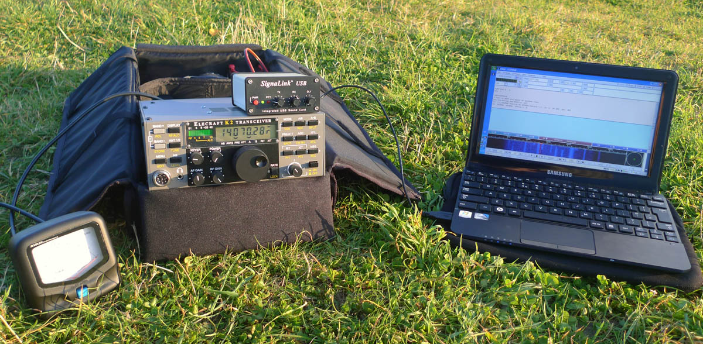
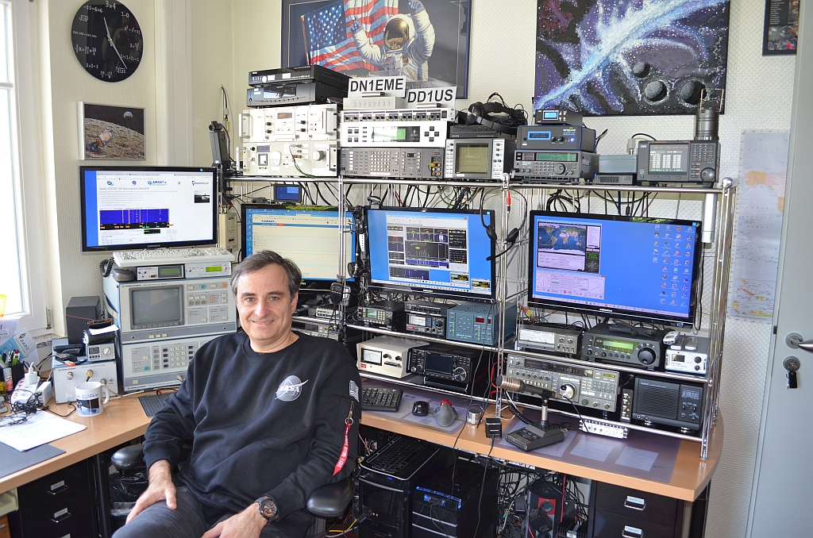
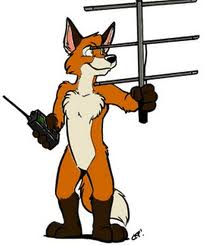
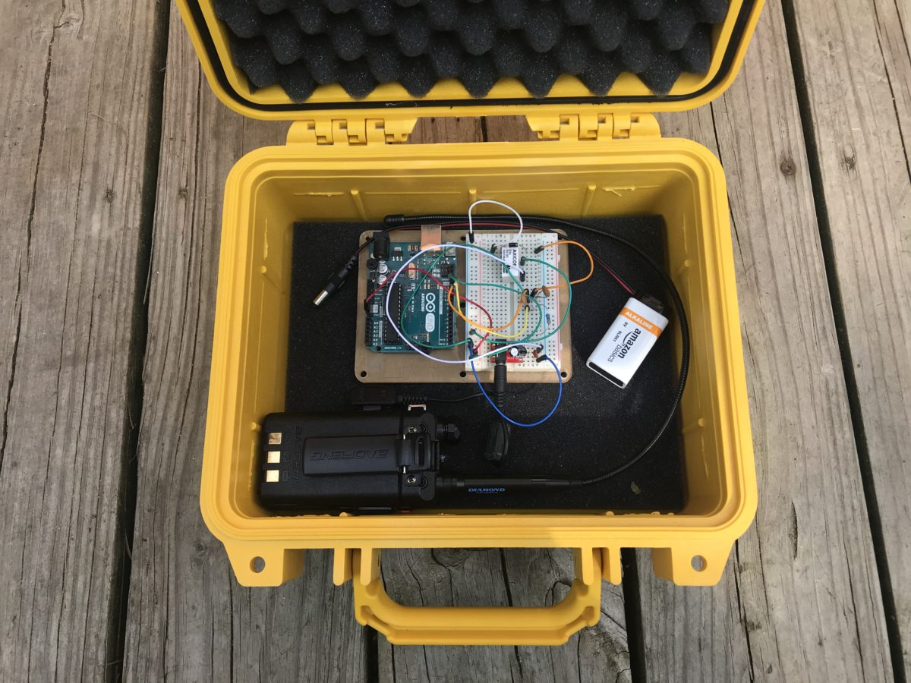

Ham radio, officially called an amateur radio, is a hobby that brings people, electronics and communication together. People use ham radio to talk across towns, cities, around the world and even into space, all without internet or cellphones. This hobby is so popular that there is a dedicated radio spectrum range for the radio amateurs. This hobby is here since the early 20th century, it has gone trough many world events such as first and second world war.

Who are radio amateurs?
Radio amateurs are people that use radio communication equipment to engage in discussions trough radio on the ham radio frequency spectrum. They use this hobby to increase their knowledge in electronics and various other fields too. Radio amateurs contact people from all around the world and build international friendship, they can also contact the crew of the ISS space station. Many radio technology advancements were made by ham radio operators. Radio amateurs can be useful too, they are known to help local emergency services in communication during crisis.

How to become a radio amateur
To become an ham radio operator you need to get licensed. You can obtain your radio operator license by signing up for exam and studying for it. You need to get licensed so you get to learn about various useful things related to ham radio, such as electronics, how radios work, codes, terminology, radio etiquete and little bit of physics. Countless lives have been saved thanks to well educated ham radio hobbyists that acted as emergency communicators. For example during an earthquake in Italy or hurricane in the U.S.
After passing the exam you will obtain your own ham radio operator callsign, this is your name in the radio world. When contacting you must announce your callsign to the reciepient before starting an conversation.

Radio amateur activities
Ham radio attracts practitioners with a wide range of interests, Many amateurs begin with a fascination with radio communication and then combine other personal interests to make pursuit of the hobby rewarding. Some of the focal areas amateurs pursue include radio contesting radio propagation study, public service experimenting, radio games and computer networking.

Amateur radio operators like to contest and play games trough radio such as chess, Dungeons & Dragons or “name, city, animal, object”. They also partipicate in real life game events such as where they hide the radio beacons posing as “foxes” and the amateur radio operators have to find them using their portable handheld ham radio.
They love to create experiment, develop and build their own equipment. Amateur radio operators have reputation of being creative and good at making antennas and homemade radios.
